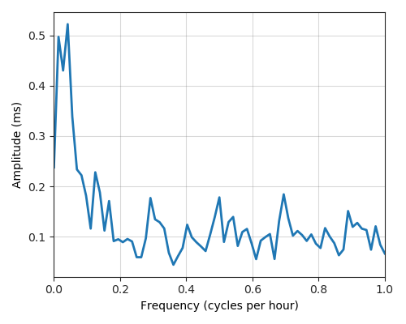

---
layout: default
title: Last-mile delay survey / 2019-06-01 / AS7029
---
AS7029, WINDSTREAM, US
Summary
- Daily last-mile fluctuations: low
- Number of probes: 5
- APNIC eyeball rank: 269
- Daily fluctuations: True
- Main frequency: 0.0417
- Average peak-to-peak amplitude: 0.52ms
Aggregated last-mile queuing delay

Periodogram

24H profile
Probes' last-mile RTT